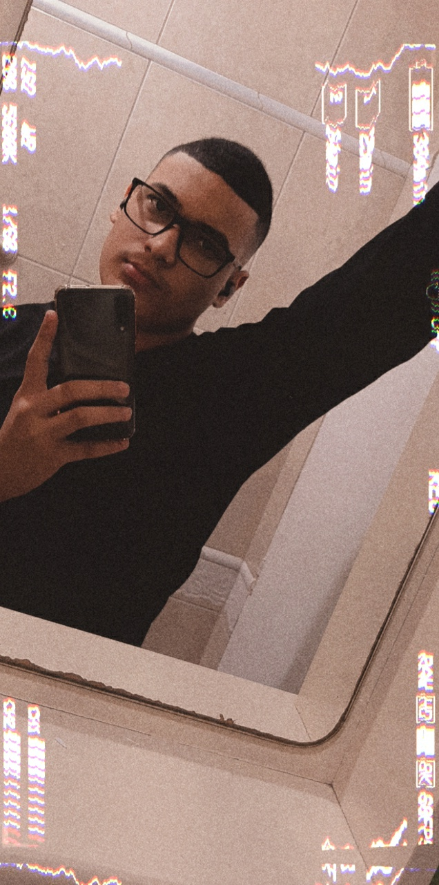

👋 Sou estudante de desenvolvimento de software, atualmente moro em Osasco.
Atualmente estou cursando o ensino medio em São Paulo e o curso técnico em desenvolvimento de Software na Etec,
no futuro pretendo fazer faculdade de engenharia de software me especializando em desenvolvimento para mobile e após cursar
segurança da informação.
Comecei meu primeiro projeto em meu curso de desenvolvimento de software que foi o
Sistema Windows Forms para Palace Petz
após esse projeto comecei a programar aplicações mobile e até hoje me interesso muito pela
área de desenvolvimento mobile, o ultimo projeto que desenvolvi para mobile junto com minha
equipe de desenvolvimento foi o System Strength App cujo a ideia
da aplicação é um agenda para os seus funcionários.
Atualmente estamos(Eu, Matheus e Yuri) trabalhando em um
projeto chamado Coffee For Code, onde o intuito é nosso aprendizado e o aperfeiçoamento na programação.